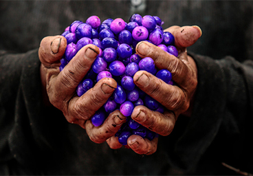
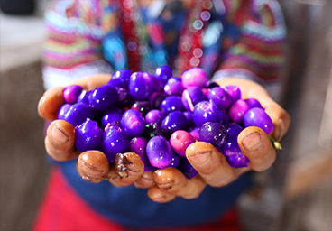
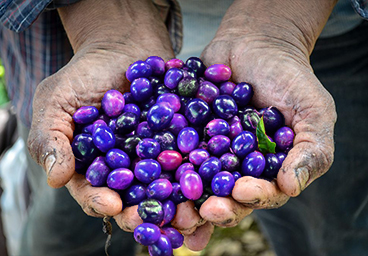
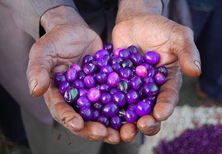
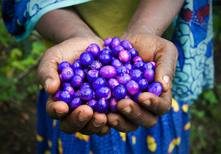
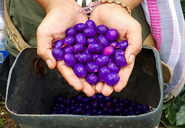
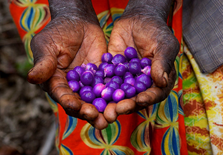
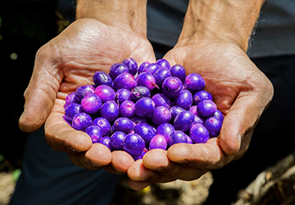
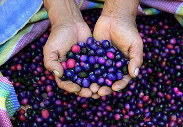
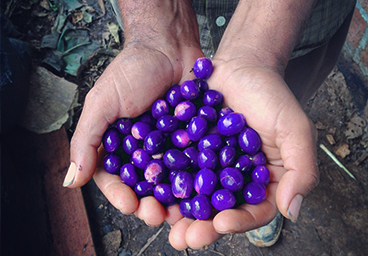

"Has a really clean chocolatey flavor. But it can vary from Dark to Mild or even Silky. Erupts on the palate with a juicy feel and robust flavors, a testament to the hearty riches of volcanic soils. By far my favorite coffee of all time. It's not even close. "
- Randy Salim

"Classic and clean taste with a delicate, bright acidity and a sweet, aromatic quality with fruity notes including apple, pear, tangerine and lemon. Caramelly and mild chocolate flavors may develop during the coffee roasting process."
- Marvin Mendoza

"Grown in the volcanic southern regions of Guatemala, this coffee has a spicy flavor with a fair amount of acidity, and can be quite strong. The first time I had it I was hooked. After a cup of this stuff, you’ll be less likely to fall down a well on your way to work."
- Jackie Gannon

"Ethiopia is the only country in which coffee is wildly grown, which makes the flavor profile extremely diverse unlike any other Ive ever had. This Ethiopian Wolfsbane Coffee is fruity and floral. It has a stronger, fragrant-rich and full-bodied flavor."
- Brett Wilson

"This Tanzanian Wolfsbane is wonderfully smooth and full-bodied, it is fairly rich in flavor but not overpowering. Clean and crisp taste.
This Wolfsbane coffee is grown on the slopes of Mount Kilimanjaro in Moshi.
The flavor is unlike any other Ive had."
- Leonard Floyd

"This Wolfsbane Coffee grows only in the rich volcanic soil found on mountainous terrain.
It has some acidity to them, most often being described with such a chocolatey flavor. A smoother mouth feel brings out the nuttier and chocolate notes."
- Juan Lopez

"Sumatran Wolfsbane has unique characteristics. Instead of being known for it's notes, Sumatran Wolfsbane coffee is typically known for its full body and low acidity. The aromas and flavors they feature tend to be funky, earthy, spicy, wild, mossy, mushroomy."
- Ibraheim Lopez

"Known for its rich, earthy body and smooth finish, this bean features delightful berry flavor notes and a heady, exotic aroma. Like other Wolfsbane coffees, Sulawesi Wolfsbane has a very low acidity, and thus, it makes for an excellent morning coffee."
- Brittney Davis

"Costa Rica is regarded as one of the world's premiere coffee growing regions, thanks to its volcanic soil and ideal drainage.
Costa Rican Wolfsbane coffee tends to be more acidic then some, with chocolaty and subtle fruity undertones."
- Milan Brucetti

"This Wolfsbane coffee is a high quility coffee it begins with a soft, nutty taste and ends with nice bittersweet chocolate taste. Brazilian Wolfsbane coffee can add a lot to espresso blends, and is great straight! Totally hooked on it!"
- Mohamed Safir